Hi, my name is Alana. I am currently in grade 12 at Unity Composite High School. I am the secretary of our schools SLC (student leadership counsel.) I enjoy activities such as volleyball, softball, and photography and travelling. My most recent travels have taken me to Hawaii, visiting 4 of the 8 Hawaiian Islands. I’m looking forward to this experience and the chance to learn new exciting things that I can apply to my everyday life.
Alison
My name is Alison; I’m a student at Unity Composite High School in Unity, Saskatchewan. My favourite classes are English and Visual Arts. I enjoy playing basketball and softball, as well as taking part in the school Drama Club. In my spare time, I like to read, write, play the piano, listen to music, and spend time with my friends.
Austin
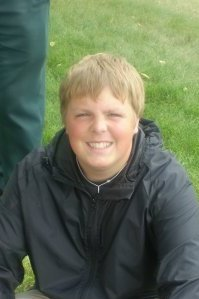
Hey there! My name is Austin. I am currently a grade eleven student at North Battleford Comprehensive High School. Along with classes I am also involved in yearbook, SRC, as well as various comunity activities. Outside of school I enjoy going to my part time job at the Coop Service Station as well as raising miniature donkeys.
Brady
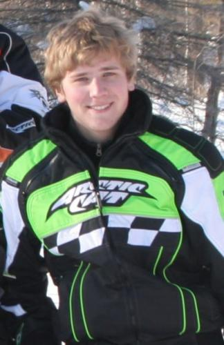
My name is Brady, and I currently go to school at McLurg High School. I am in Grade Eleven. I enjoy outdoor activities such as snowmobiling and dirtbiking. I also like to play hockey. This project is going to be a huge learning experience for me, and I look forward to tackling the everyday problems that a team like this will face.
Bruin
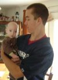
Hi, my name is Bruin. I attend North Battleford Comprehensive High School. I love learning about new technologies and developments. I am a grade eleven student who spends my time playing sports and music. I am also a nationally ranked Taekwondo fighter. I enjoy playing videogames, creating movies, and recording music. You could say I am pretty much a techno nerd.
Evan
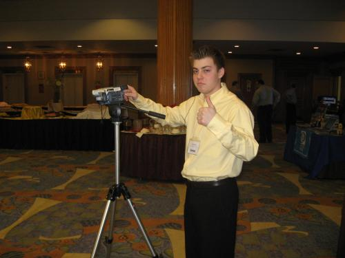
Hi, my name is Evan. I'm a grade 11 student at Unity Composite High School. My activities include hockey, baseball, golf and my girlfriend. I've recently learned how to knit and look forward to creating fashionable, yet functional gifts for my friends and family. I'm a bit of a lurker on Twitter. . . can I follow you????
Jalisa
My name is Jalisa. I am 17 years old and reside in Unity, SK. I was born and raised in the small town of Unity, along side my two brothers. I am graduating from Unity Composite High School in June and plan on going to SIAST in the fall. I enjoy camping, fishing, ski-dooing and horse back riding. I signed up for E-Journalism because I thought it was a great opportunity and I look forward to the experience and hope to take some beneficial knowledge out of it.
James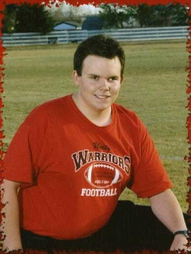
I was born December 3, 1990 in Swift Current, Saskatchewan. I was adopted by my parents Doug and Agnes on December 22, and since then have lived on a farm near Unity. We used to farm cereal crops and Hereford cattle. My Mom used to teach Grades 1, 2 and 3, as well as General Music in Unity. I have always enjoyed farming, and many of my hobbies have spurred from the farm. Woodworking, metalworking, drafting, mechanics, building models and snowmobiling are among my favourites. I am also heavily interested in modern and vintage vehicles, and agricultural and industrial equipment.
I took all my schooling in Unity, first at Unity Public School and then at Unity Composite High School. I am currently in Grade 12. For the past two years, I have been the Manager for the UCHS Warriors football team. In my first year as Manager, we were the 2007 Provincial 9-Man Champions, undefeated 11-0! I was recently accepted to the University of Saskatchewan’s College of Arts and Science. I plan to obtain my Bachelor of Education after two years in Arts.
I plan to teach senior high school English, Social Studies/History, and related subjects for about three years after convocation. English has always been one of my most proficient subjects, and I love stories, history and lore. After teaching, I intend to become a member of the Royal Canadian Mounted Police. I would like to work at that for as close to 20 years as possible. Afterwards, I will go back to teaching, and hopefully develop an acreage where I can raise horses and re-establish some of my hobbies. I enjoy working with kids, and wish to help people, and make a difference in the lives of others.
Jeannie
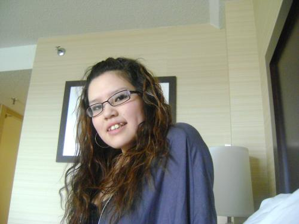
Hello, my name is Jeannie, I am 18 years old but people think of me as 15 or 16, I get that a lot. I grew up in Sweetgrass First Nation, I have 4 brothers and I have no sisters. As a child I have moved a lot here and there. I didn’t really stay in one school or one place. I always had to make new friends it was hard growing up. I didn’t really know my father, I would love to get more in touch with him. About my mother she wasn’t really around that often either. She works pretty long hours, and comes home late a night so I don’t really get to spend that much time with her. For me growing up without a sister or my mother not being around that often, it was tough, I had to learn all those girl stuff by myself. I have gone into a lot of trouble with the wrong people. Anywho that’s a little to personal so back to the basic, I like traveling, camping out, and riding horses, I also like to spend most my time by myself. Currently I am a student at Cando School, I am very well in all my classes. I am more of a follower not a leader, I don’t like making decisions or really telling people what to do. In this past year I have met someone that I could really talk to and that cares a lot for me, I live with him now, I can’t really wait until we get our own place.
Thanks for reading about me and hope you got want you needed to know, if you want don’t be afraid come and ask more questions about myself I will be delighted to answer more questions you may have.
Kirsti
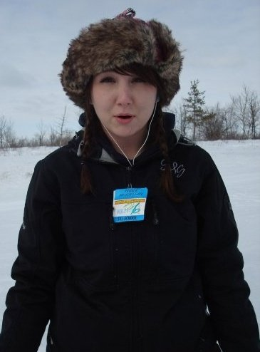
My name is Kirsti and I’m in grade twelve at Spiritwood High School. I enjoy baseball and volleyball but my real passion is hockey. My team is currently in league finals with 2 games left. I enjoy taking on new challenges and taking risks. I think that reporting at the IT Summit is going to be a blast and I’m pretty pumped about it.
Lyneah
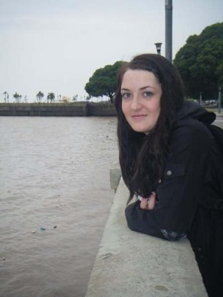
My name is Lyneah. I am currently in grade 12 in Spiritwood High School. I enjoy traveling, playing softball and volleyball. Next year I am planning on attending the University of Saskatchewan in the college of Engineering. In my spare time I enjoy reading, listening to country music, and watching hockey!
Megan
My name is Megan , and I am awesome. I am 17 years old and graduating this year from Cando Community School. I like watching Gossip Girl and 90210. I spend most of my days sleeping. I enjoy hanging out with friends and visiting with family. And i'm like very excited to be leaving to egypt in like 3 weeks. Kayye :D
Mellica
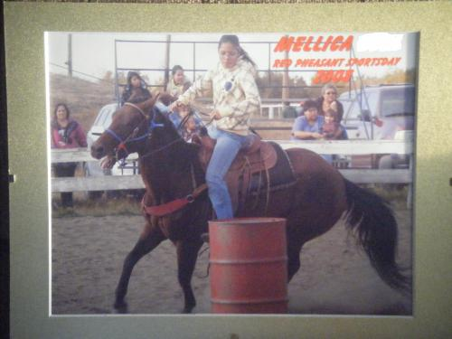
My name is Mellica I am Presently finishing grade 11 and attending at Cando Community School. I was born and raised in the North Battleford area, I then moved in with my grandparents in Little Pine and went to school there until I was in grade 2, then I moved to Mosquito and lived with my parents and went to Clifford Wuttunee school for two years. I have been attending school at Cando for 7 years.
I really enjoy riding horse, dancing pow-wow and playing sports. I have ridden horses for 7 years going on 8 years, I also train(break-in) horses and barrel race. I have danced fancy off and on since I was kid.
When I finish school I plan on going to university for practical nursing or a veterinarian, I also want to continue riding horses and run for Rodeo Queen.
Mena
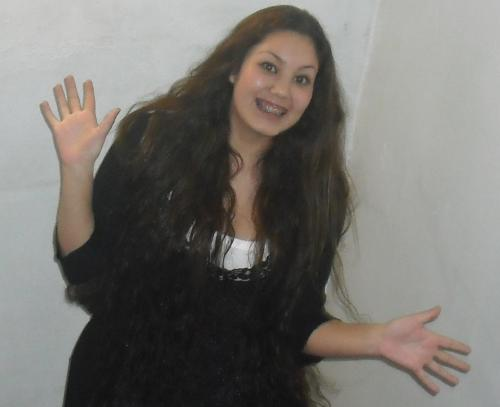My name is Mena. I’m in grade 11 and currently attending Cut Knife High School. I enjoy barrel racing, racing track horses, figure skating, playing volleyball, and spending time with friends. I joined this e-journalism team because I will be studying broadcasting in my post secondary education.
Nicole
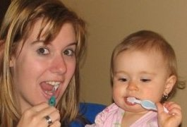
Hi my name is Nicole. I’m a grade 11 student at North Battleford Comprehensive High School. I enjoy playing volleyball and basketball. I enjoy school, my favourite class is gym. I have three older brothers a mom and a dad! I really want a golden retriever! And when I grow up I’m going to be farmer’s wife! I wanted to do this e-journalism project cause it seemed like something new and different from what I normally do. It also seems like a good experience.
Raven
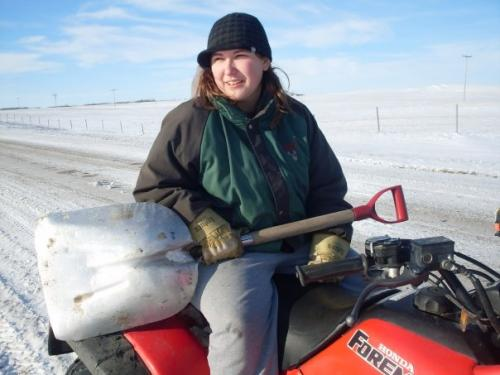
I'm Raven, I am in grade 11 at Cando Community School. I play basketball. I'm a published writer. I love music and hanging out with my friends. I live in North Battleford. I've lived in a few different places like, Cando, Cutknife and Brooks.
Shay
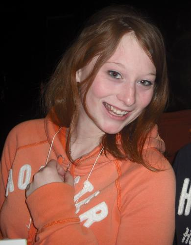
I attend Cut Knife High School. I am currently in Gr. 11. I love to dance and play volleyball. I also like fast ball, swimming in my pool and jumping on the trampoline. I watch a lot of movies! I was interested in doing this project because I wanted to find out what it was like to be a journalist. And also because we found out we can go water sliding. I hope that what I learn here will help me maybe pursue a career in journalism. I never really thought about being a journalist until now… but now it’s definitely a possibility.
Taylor
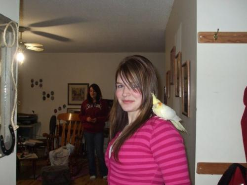
I am currently attending the Cut Knife High School. I like to play sports and my favorite sport is volleyball. I also enjoy playing hockey fastball and badminton. I love hanging out with my friends! I chose to work on this journalism project because I was curious to know what it would be like to be a reporter. Oh and I can’t forget, I’m very excited to go water sliding! I hope to learn more about journalism and all the different ways of technology you can use to share events.
Teigan
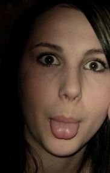
My name is Teigan. I am in grade ten at Spiritwood High School. I like volleyball, snowboarding, hockey, and texting. My favorite subjects are history, art and English.